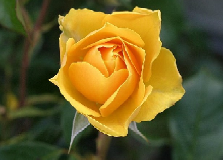

꽃말의 유래
꽃말은 10세기 유럽에 영국을 중심으로 실물학, 조경등이 발달하면서 유행이 되었는데,
그때 당시에는 직접 말로 전할 수 없는 메세지들을 꽃을 통해서 전달하는 경우가 굉장히 많았다고한다.
사람들이 꽃말 사전을 가지고다니기도 할 만큼 시대적 큰 유행이였다.
원래는 나라마다 꽃의 뜻이 틀렸었는데, 시간이 지나면서 전 세계 공통적으로 정리 되었다고한다.
꽃말은 꽃의 모양이나, 특성에서 유래한게 대부분이며
신화나 전설 등에 나오는 꽃 관련 이야기에서 유래한 것도 있다고한다.
꽃말 소개
- 흰색 튤립
- 실연
- 빨간 튤립
- 사랑의 고백, 영원한 애정
- 빨간 장미
- 열렬한 사랑
- 파란 장미
- 희망, 기적
- 흰색 장미
- 순결함, 청순함
- 노랑 장미 
- 우정과 영원한 사랑
- 수국
- 진심, 변덕
- 프리지아
- 천진난만, 자기자랑
- 백합
- 순결, 변함 없는 사랑
- 노란 국화
- 짝사랑, 실망
- 분홍 국화
- 정조
- 벚꽃
- 절세미인, 순결
- 안개꽃
- 깨끗한 마음, 사랑의 성공
- 라그라스
- 친절에 대한 감사
- 코스모스
- 순정
- 목화
- 어머니의 사랑
- 라넌큘러스
- 매력, 매혹, 비난하다
- 칼라
- 열정, 청정
- 해바라기
- 숭배, 기다림
- 개나리
- 희망, 나의 사랑이 당신보다 강함
- 동백꽃
- 그대를 누구보다 사랑합니다


 >
>